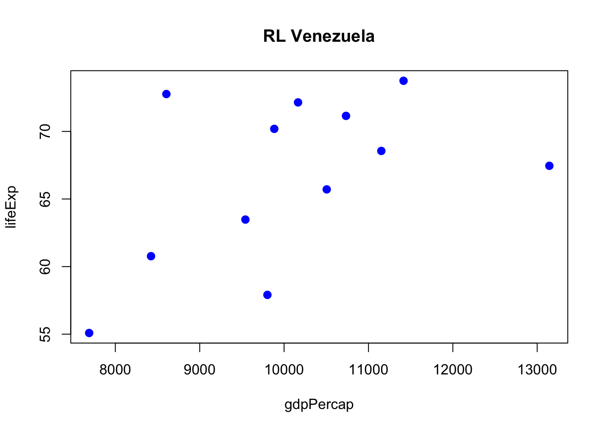
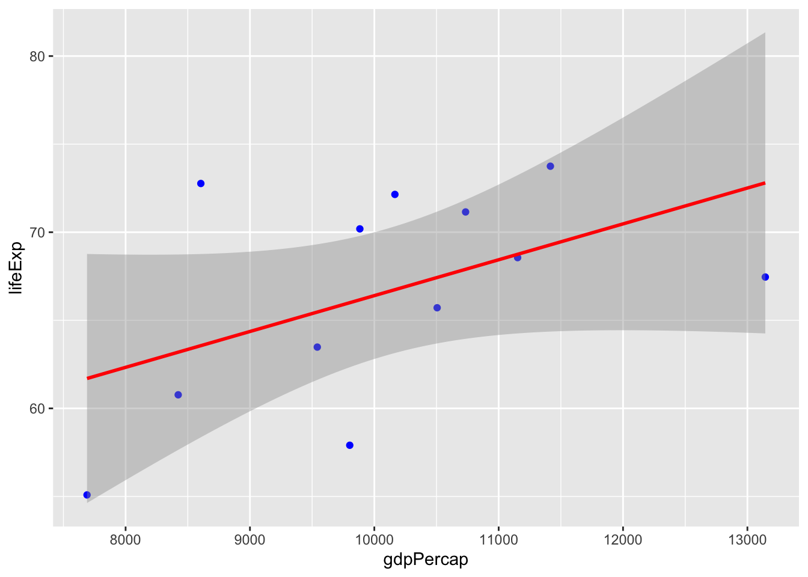

library(tidyverse)
df_gapminder_csv <- read.csv('https://raw.githubusercontent.com/javendaXgh/datos/refs/heads/master/gapminder.csv')%>%
select(-X)%>%
as_tibble()Clase 13- Agrupamientos, Reframes, RL
Objetivo:
Usar funciones de dplyr para poder agrupar datos y obtener valores al aplicar una función para cada grupo. Aplicar LM de forma vectorizada por grupos
Cargar Datos y Paquetes
1) obtener keys del agrupamiento
df_gapminder_csv%>%
group_by(country)%>%
group_keys()%>%
pull(country) [1] "Afghanistan" "Albania"
[3] "Algeria" "Angola"
[5] "Argentina" "Australia"
[7] "Austria" "Bahrain"
[9] "Bangladesh" "Belgium"
[11] "Benin" "Bolivia"
[13] "Bosnia and Herzegovina" "Botswana"
[15] "Brazil" "Bulgaria"
[17] "Burkina Faso" "Burundi"
[19] "Cambodia" "Cameroon"
[21] "Canada" "Central African Republic"
[23] "Chad" "Chile"
[25] "China" "Colombia"
[27] "Comoros" "Congo, Dem. Rep."
[29] "Congo, Rep." "Costa Rica"
[31] "Cote d'Ivoire" "Croatia"
[33] "Cuba" "Czech Republic"
[35] "Denmark" "Djibouti"
[37] "Dominican Republic" "Ecuador"
[39] "Egypt" "El Salvador"
[41] "Equatorial Guinea" "Eritrea"
[43] "Ethiopia" "Finland"
[45] "France" "Gabon"
[47] "Gambia" "Germany"
[49] "Ghana" "Greece"
[51] "Guatemala" "Guinea"
[53] "Guinea-Bissau" "Haiti"
[55] "Honduras" "Hong Kong, China"
[57] "Hungary" "Iceland"
[59] "India" "Indonesia"
[61] "Iran" "Iraq"
[63] "Ireland" "Israel"
[65] "Italy" "Jamaica"
[67] "Japan" "Jordan"
[69] "Kenya" "Korea, Dem. Rep."
[71] "Korea, Rep." "Kuwait"
[73] "Lebanon" "Lesotho"
[75] "Liberia" "Libya"
[77] "Madagascar" "Malawi"
[79] "Malaysia" "Mali"
[81] "Mauritania" "Mauritius"
[83] "Mexico" "Mongolia"
[85] "Montenegro" "Morocco"
[87] "Mozambique" "Myanmar"
[89] "Namibia" "Nepal"
[91] "Netherlands" "New Zealand"
[93] "Nicaragua" "Niger"
[95] "Nigeria" "Norway"
[97] "Oman" "Pakistan"
[99] "Panama" "Paraguay"
[101] "Peru" "Philippines"
[103] "Poland" "Portugal"
[105] "Puerto Rico" "Reunion"
[107] "Romania" "Rwanda"
[109] "Sao Tome and Principe" "Saudi Arabia"
[111] "Senegal" "Serbia"
[113] "Sierra Leone" "Singapore"
[115] "Slovak Republic" "Slovenia"
[117] "Somalia" "South Africa"
[119] "Spain" "Sri Lanka"
[121] "Sudan" "Swaziland"
[123] "Sweden" "Switzerland"
[125] "Syria" "Taiwan"
[127] "Tanzania" "Thailand"
[129] "Togo" "Trinidad and Tobago"
[131] "Tunisia" "Turkey"
[133] "Uganda" "United Kingdom"
[135] "United States" "Uruguay"
[137] "Venezuela" "Vietnam"
[139] "West Bank and Gaza" "Yemen, Rep."
[141] "Zambia" "Zimbabwe" 2) extraer valores de las keys en un vector
df_gapminder_csv%>%
group_by(country)%>%
group_keys()%>%
pull(country) [1] "Afghanistan" "Albania"
[3] "Algeria" "Angola"
[5] "Argentina" "Australia"
[7] "Austria" "Bahrain"
[9] "Bangladesh" "Belgium"
[11] "Benin" "Bolivia"
[13] "Bosnia and Herzegovina" "Botswana"
[15] "Brazil" "Bulgaria"
[17] "Burkina Faso" "Burundi"
[19] "Cambodia" "Cameroon"
[21] "Canada" "Central African Republic"
[23] "Chad" "Chile"
[25] "China" "Colombia"
[27] "Comoros" "Congo, Dem. Rep."
[29] "Congo, Rep." "Costa Rica"
[31] "Cote d'Ivoire" "Croatia"
[33] "Cuba" "Czech Republic"
[35] "Denmark" "Djibouti"
[37] "Dominican Republic" "Ecuador"
[39] "Egypt" "El Salvador"
[41] "Equatorial Guinea" "Eritrea"
[43] "Ethiopia" "Finland"
[45] "France" "Gabon"
[47] "Gambia" "Germany"
[49] "Ghana" "Greece"
[51] "Guatemala" "Guinea"
[53] "Guinea-Bissau" "Haiti"
[55] "Honduras" "Hong Kong, China"
[57] "Hungary" "Iceland"
[59] "India" "Indonesia"
[61] "Iran" "Iraq"
[63] "Ireland" "Israel"
[65] "Italy" "Jamaica"
[67] "Japan" "Jordan"
[69] "Kenya" "Korea, Dem. Rep."
[71] "Korea, Rep." "Kuwait"
[73] "Lebanon" "Lesotho"
[75] "Liberia" "Libya"
[77] "Madagascar" "Malawi"
[79] "Malaysia" "Mali"
[81] "Mauritania" "Mauritius"
[83] "Mexico" "Mongolia"
[85] "Montenegro" "Morocco"
[87] "Mozambique" "Myanmar"
[89] "Namibia" "Nepal"
[91] "Netherlands" "New Zealand"
[93] "Nicaragua" "Niger"
[95] "Nigeria" "Norway"
[97] "Oman" "Pakistan"
[99] "Panama" "Paraguay"
[101] "Peru" "Philippines"
[103] "Poland" "Portugal"
[105] "Puerto Rico" "Reunion"
[107] "Romania" "Rwanda"
[109] "Sao Tome and Principe" "Saudi Arabia"
[111] "Senegal" "Serbia"
[113] "Sierra Leone" "Singapore"
[115] "Slovak Republic" "Slovenia"
[117] "Somalia" "South Africa"
[119] "Spain" "Sri Lanka"
[121] "Sudan" "Swaziland"
[123] "Sweden" "Switzerland"
[125] "Syria" "Taiwan"
[127] "Tanzania" "Thailand"
[129] "Togo" "Trinidad and Tobago"
[131] "Tunisia" "Turkey"
[133] "Uganda" "United Kingdom"
[135] "United States" "Uruguay"
[137] "Venezuela" "Vietnam"
[139] "West Bank and Gaza" "Yemen, Rep."
[141] "Zambia" "Zimbabwe" 3) Índices de filas por grupo
df_gap_country <- df_gapminder_csv%>%
group_by(country)
df_gap_country%>%
group_rows()<list_of<integer>[142]>
[[1]]
[1] 1 2 3 4 5 6 7 8 9 10 11 12
[[2]]
[1] 13 14 15 16 17 18 19 20 21 22 23 24
[[3]]
[1] 25 26 27 28 29 30 31 32 33 34 35 36
[[4]]
[1] 37 38 39 40 41 42 43 44 45 46 47 48
[[5]]
[1] 49 50 51 52 53 54 55 56 57 58 59 60
[[6]]
[1] 61 62 63 64 65 66 67 68 69 70 71 72
[[7]]
[1] 73 74 75 76 77 78 79 80 81 82 83 84
[[8]]
[1] 85 86 87 88 89 90 91 92 93 94 95 96
[[9]]
[1] 97 98 99 100 101 102 103 104 105 106 107 108
[[10]]
[1] 109 110 111 112 113 114 115 116 117 118 119 120
[[11]]
[1] 121 122 123 124 125 126 127 128 129 130 131 132
[[12]]
[1] 133 134 135 136 137 138 139 140 141 142 143 144
[[13]]
[1] 145 146 147 148 149 150 151 152 153 154 155 156
[[14]]
[1] 157 158 159 160 161 162 163 164 165 166 167 168
[[15]]
[1] 169 170 171 172 173 174 175 176 177 178 179 180
[[16]]
[1] 181 182 183 184 185 186 187 188 189 190 191 192
[[17]]
[1] 193 194 195 196 197 198 199 200 201 202 203 204
[[18]]
[1] 205 206 207 208 209 210 211 212 213 214 215 216
[[19]]
[1] 217 218 219 220 221 222 223 224 225 226 227 228
[[20]]
[1] 229 230 231 232 233 234 235 236 237 238 239 240
[[21]]
[1] 241 242 243 244 245 246 247 248 249 250 251 252
[[22]]
[1] 253 254 255 256 257 258 259 260 261 262 263 264
[[23]]
[1] 265 266 267 268 269 270 271 272 273 274 275 276
[[24]]
[1] 277 278 279 280 281 282 283 284 285 286 287 288
[[25]]
[1] 289 290 291 292 293 294 295 296 297 298 299 300
[[26]]
[1] 301 302 303 304 305 306 307 308 309 310 311 312
[[27]]
[1] 313 314 315 316 317 318 319 320 321 322 323 324
[[28]]
[1] 325 326 327 328 329 330 331 332 333 334 335 336
[[29]]
[1] 337 338 339 340 341 342 343 344 345 346 347 348
[[30]]
[1] 349 350 351 352 353 354 355 356 357 358 359 360
[[31]]
[1] 361 362 363 364 365 366 367 368 369 370 371 372
[[32]]
[1] 373 374 375 376 377 378 379 380 381 382 383 384
[[33]]
[1] 385 386 387 388 389 390 391 392 393 394 395 396
[[34]]
[1] 397 398 399 400 401 402 403 404 405 406 407 408
[[35]]
[1] 409 410 411 412 413 414 415 416 417 418 419 420
[[36]]
[1] 421 422 423 424 425 426 427 428 429 430 431 432
[[37]]
[1] 433 434 435 436 437 438 439 440 441 442 443 444
[[38]]
[1] 445 446 447 448 449 450 451 452 453 454 455 456
[[39]]
[1] 457 458 459 460 461 462 463 464 465 466 467 468
[[40]]
[1] 469 470 471 472 473 474 475 476 477 478 479 480
[[41]]
[1] 481 482 483 484 485 486 487 488 489 490 491 492
[[42]]
[1] 493 494 495 496 497 498 499 500 501 502 503 504
[[43]]
[1] 505 506 507 508 509 510 511 512 513 514 515 516
[[44]]
[1] 517 518 519 520 521 522 523 524 525 526 527 528
[[45]]
[1] 529 530 531 532 533 534 535 536 537 538 539 540
[[46]]
[1] 541 542 543 544 545 546 547 548 549 550 551 552
[[47]]
[1] 553 554 555 556 557 558 559 560 561 562 563 564
[[48]]
[1] 565 566 567 568 569 570 571 572 573 574 575 576
[[49]]
[1] 577 578 579 580 581 582 583 584 585 586 587 588
[[50]]
[1] 589 590 591 592 593 594 595 596 597 598 599 600
[[51]]
[1] 601 602 603 604 605 606 607 608 609 610 611 612
[[52]]
[1] 613 614 615 616 617 618 619 620 621 622 623 624
[[53]]
[1] 625 626 627 628 629 630 631 632 633 634 635 636
[[54]]
[1] 637 638 639 640 641 642 643 644 645 646 647 648
[[55]]
[1] 649 650 651 652 653 654 655 656 657 658 659 660
[[56]]
[1] 661 662 663 664 665 666 667 668 669 670 671 672
[[57]]
[1] 673 674 675 676 677 678 679 680 681 682 683 684
[[58]]
[1] 685 686 687 688 689 690 691 692 693 694 695 696
[[59]]
[1] 697 698 699 700 701 702 703 704 705 706 707 708
[[60]]
[1] 709 710 711 712 713 714 715 716 717 718 719 720
[[61]]
[1] 721 722 723 724 725 726 727 728 729 730 731 732
[[62]]
[1] 733 734 735 736 737 738 739 740 741 742 743 744
[[63]]
[1] 745 746 747 748 749 750 751 752 753 754 755 756
[[64]]
[1] 757 758 759 760 761 762 763 764 765 766 767 768
[[65]]
[1] 769 770 771 772 773 774 775 776 777 778 779 780
[[66]]
[1] 781 782 783 784 785 786 787 788 789 790 791 792
[[67]]
[1] 793 794 795 796 797 798 799 800 801 802 803 804
[[68]]
[1] 805 806 807 808 809 810 811 812 813 814 815 816
[[69]]
[1] 817 818 819 820 821 822 823 824 825 826 827 828
[[70]]
[1] 829 830 831 832 833 834 835 836 837 838 839 840
[[71]]
[1] 841 842 843 844 845 846 847 848 849 850 851 852
[[72]]
[1] 853 854 855 856 857 858 859 860 861 862 863 864
[[73]]
[1] 865 866 867 868 869 870 871 872 873 874 875 876
[[74]]
[1] 877 878 879 880 881 882 883 884 885 886 887 888
[[75]]
[1] 889 890 891 892 893 894 895 896 897 898 899 900
[[76]]
[1] 901 902 903 904 905 906 907 908 909 910 911 912
[[77]]
[1] 913 914 915 916 917 918 919 920 921 922 923 924
[[78]]
[1] 925 926 927 928 929 930 931 932 933 934 935 936
[[79]]
[1] 937 938 939 940 941 942 943 944 945 946 947 948
[[80]]
[1] 949 950 951 952 953 954 955 956 957 958 959 960
[[81]]
[1] 961 962 963 964 965 966 967 968 969 970 971 972
[[82]]
[1] 973 974 975 976 977 978 979 980 981 982 983 984
[[83]]
[1] 985 986 987 988 989 990 991 992 993 994 995 996
[[84]]
[1] 997 998 999 1000 1001 1002 1003 1004 1005 1006 1007 1008
[[85]]
[1] 1009 1010 1011 1012 1013 1014 1015 1016 1017 1018 1019 1020
[[86]]
[1] 1021 1022 1023 1024 1025 1026 1027 1028 1029 1030 1031 1032
[[87]]
[1] 1033 1034 1035 1036 1037 1038 1039 1040 1041 1042 1043 1044
[[88]]
[1] 1045 1046 1047 1048 1049 1050 1051 1052 1053 1054 1055 1056
[[89]]
[1] 1057 1058 1059 1060 1061 1062 1063 1064 1065 1066 1067 1068
[[90]]
[1] 1069 1070 1071 1072 1073 1074 1075 1076 1077 1078 1079 1080
[[91]]
[1] 1081 1082 1083 1084 1085 1086 1087 1088 1089 1090 1091 1092
[[92]]
[1] 1093 1094 1095 1096 1097 1098 1099 1100 1101 1102 1103 1104
[[93]]
[1] 1105 1106 1107 1108 1109 1110 1111 1112 1113 1114 1115 1116
[[94]]
[1] 1117 1118 1119 1120 1121 1122 1123 1124 1125 1126 1127 1128
[[95]]
[1] 1129 1130 1131 1132 1133 1134 1135 1136 1137 1138 1139 1140
[[96]]
[1] 1141 1142 1143 1144 1145 1146 1147 1148 1149 1150 1151 1152
[[97]]
[1] 1153 1154 1155 1156 1157 1158 1159 1160 1161 1162 1163 1164
[[98]]
[1] 1165 1166 1167 1168 1169 1170 1171 1172 1173 1174 1175 1176
[[99]]
[1] 1177 1178 1179 1180 1181 1182 1183 1184 1185 1186 1187 1188
[[100]]
[1] 1189 1190 1191 1192 1193 1194 1195 1196 1197 1198 1199 1200
[[101]]
[1] 1201 1202 1203 1204 1205 1206 1207 1208 1209 1210 1211 1212
[[102]]
[1] 1213 1214 1215 1216 1217 1218 1219 1220 1221 1222 1223 1224
[[103]]
[1] 1225 1226 1227 1228 1229 1230 1231 1232 1233 1234 1235 1236
[[104]]
[1] 1237 1238 1239 1240 1241 1242 1243 1244 1245 1246 1247 1248
[[105]]
[1] 1249 1250 1251 1252 1253 1254 1255 1256 1257 1258 1259 1260
[[106]]
[1] 1261 1262 1263 1264 1265 1266 1267 1268 1269 1270 1271 1272
[[107]]
[1] 1273 1274 1275 1276 1277 1278 1279 1280 1281 1282 1283 1284
[[108]]
[1] 1285 1286 1287 1288 1289 1290 1291 1292 1293 1294 1295 1296
[[109]]
[1] 1297 1298 1299 1300 1301 1302 1303 1304 1305 1306 1307 1308
[[110]]
[1] 1309 1310 1311 1312 1313 1314 1315 1316 1317 1318 1319 1320
[[111]]
[1] 1321 1322 1323 1324 1325 1326 1327 1328 1329 1330 1331 1332
[[112]]
[1] 1333 1334 1335 1336 1337 1338 1339 1340 1341 1342 1343 1344
[[113]]
[1] 1345 1346 1347 1348 1349 1350 1351 1352 1353 1354 1355 1356
[[114]]
[1] 1357 1358 1359 1360 1361 1362 1363 1364 1365 1366 1367 1368
[[115]]
[1] 1369 1370 1371 1372 1373 1374 1375 1376 1377 1378 1379 1380
[[116]]
[1] 1381 1382 1383 1384 1385 1386 1387 1388 1389 1390 1391 1392
[[117]]
[1] 1393 1394 1395 1396 1397 1398 1399 1400 1401 1402 1403 1404
[[118]]
[1] 1405 1406 1407 1408 1409 1410 1411 1412 1413 1414 1415 1416
[[119]]
[1] 1417 1418 1419 1420 1421 1422 1423 1424 1425 1426 1427 1428
[[120]]
[1] 1429 1430 1431 1432 1433 1434 1435 1436 1437 1438 1439 1440
[[121]]
[1] 1441 1442 1443 1444 1445 1446 1447 1448 1449 1450 1451 1452
[[122]]
[1] 1453 1454 1455 1456 1457 1458 1459 1460 1461 1462 1463 1464
[[123]]
[1] 1465 1466 1467 1468 1469 1470 1471 1472 1473 1474 1475 1476
[[124]]
[1] 1477 1478 1479 1480 1481 1482 1483 1484 1485 1486 1487 1488
[[125]]
[1] 1489 1490 1491 1492 1493 1494 1495 1496 1497 1498 1499 1500
[[126]]
[1] 1501 1502 1503 1504 1505 1506 1507 1508 1509 1510 1511 1512
[[127]]
[1] 1513 1514 1515 1516 1517 1518 1519 1520 1521 1522 1523 1524
[[128]]
[1] 1525 1526 1527 1528 1529 1530 1531 1532 1533 1534 1535 1536
[[129]]
[1] 1537 1538 1539 1540 1541 1542 1543 1544 1545 1546 1547 1548
[[130]]
[1] 1549 1550 1551 1552 1553 1554 1555 1556 1557 1558 1559 1560
[[131]]
[1] 1561 1562 1563 1564 1565 1566 1567 1568 1569 1570 1571 1572
[[132]]
[1] 1573 1574 1575 1576 1577 1578 1579 1580 1581 1582 1583 1584
[[133]]
[1] 1585 1586 1587 1588 1589 1590 1591 1592 1593 1594 1595 1596
[[134]]
[1] 1597 1598 1599 1600 1601 1602 1603 1604 1605 1606 1607 1608
[[135]]
[1] 1609 1610 1611 1612 1613 1614 1615 1616 1617 1618 1619 1620
[[136]]
[1] 1621 1622 1623 1624 1625 1626 1627 1628 1629 1630 1631 1632
[[137]]
[1] 1633 1634 1635 1636 1637 1638 1639 1640 1641 1642 1643 1644
[[138]]
[1] 1645 1646 1647 1648 1649 1650 1651 1652 1653 1654 1655 1656
[[139]]
[1] 1657 1658 1659 1660 1661 1662 1663 1664 1665 1666 1667 1668
[[140]]
[1] 1669 1670 1671 1672 1673 1674 1675 1676 1677 1678 1679 1680
[[141]]
[1] 1681 1682 1683 1684 1685 1686 1687 1688 1689 1690 1691 1692
[[142]]
[1] 1693 1694 1695 1696 1697 1698 1699 1700 1701 1702 1703 17044) Añadir índice general e índice por grupo
df_gapminder_csv%>%
select(country, year, pop)%>%
mutate(idx_gral= 1:n())%>% # índice general v1
mutate(idx_gral2 =1:nrow(.))%>% # índice general v2
mutate(idx_gral3 =row_number())%>% # índice general v3
group_by(country)%>%
mutate(idx_group1= row_number())%>%
mutate(idx_group2= 1:n())%>%
# mutate(idx_group3= 1:nrow(.))%>%
print(n=25)# A tibble: 1,704 × 8
# Groups: country [142]
country year pop idx_gral idx_gral2 idx_gral3 idx_group1 idx_group2
<chr> <int> <int> <int> <int> <int> <int> <int>
1 Afghanistan 1952 8425333 1 1 1 1 1
2 Afghanistan 1957 9240934 2 2 2 2 2
3 Afghanistan 1962 10267083 3 3 3 3 3
4 Afghanistan 1967 11537966 4 4 4 4 4
5 Afghanistan 1972 13079460 5 5 5 5 5
6 Afghanistan 1977 14880372 6 6 6 6 6
7 Afghanistan 1982 12881816 7 7 7 7 7
8 Afghanistan 1987 13867957 8 8 8 8 8
9 Afghanistan 1992 16317921 9 9 9 9 9
10 Afghanistan 1997 22227415 10 10 10 10 10
11 Afghanistan 2002 25268405 11 11 11 11 11
12 Afghanistan 2007 31889923 12 12 12 12 12
13 Albania 1952 1282697 13 13 13 1 1
14 Albania 1957 1476505 14 14 14 2 2
15 Albania 1962 1728137 15 15 15 3 3
16 Albania 1967 1984060 16 16 16 4 4
17 Albania 1972 2263554 17 17 17 5 5
18 Albania 1977 2509048 18 18 18 6 6
19 Albania 1982 2780097 19 19 19 7 7
20 Albania 1987 3075321 20 20 20 8 8
21 Albania 1992 3326498 21 21 21 9 9
22 Albania 1997 3428038 22 22 22 10 10
23 Albania 2002 3508512 23 23 23 11 11
24 Albania 2007 3600523 24 24 24 12 12
25 Algeria 1952 9279525 25 25 25 1 1
# ℹ 1,679 more rows5) comparación Reframe-Mutate
5.1) Usando Mutate
df_gap_clasi_pibcontinent <- df_gapminder_csv%>%
filter(year==2007)%>%
mutate(pib_mm=(gdpPercap*pop)/1000000)%>%
group_by(continent)%>%
reframe(cuantil_1=quantile(pib_mm,p=0.25),
cuantil_3=quantile(pib_mm,p=0.75),
country, # se coloca dentro del reframe para que sean extraídos los valores
pib_mm)%>% # se coloca dentro del reframe para que sean extraídos los valores
mutate(pib_clasificacion=case_when(pib_mm < cuantil_1~'bajo',
pib_mm>= cuantil_1 & pib_mm <= cuantil_3 ~ 'medio',
pib_mm> cuantil_3 ~ 'alto'))%>%
select(-cuantil_1, -cuantil_3)5.2) Usando reframe
df_gap_clasi_pibcontinent1 <- df_gapminder_csv%>%
filter(year==2007)%>%
mutate(pib_mm=(gdpPercap*pop)/1000000)%>%
group_by(continent)%>%
reframe(cuantil_1=quantile(pib_mm,p=0.25),
cuantil_3=quantile(pib_mm,p=0.75),
country,
pib_mm)%>%
reframe(continent, country, pib_mm, pib_clasificacion=case_when(pib_mm < cuantil_1~'bajo',
pib_mm>= cuantil_1 & pib_mm <= cuantil_3 ~ 'medio',
pib_mm> cuantil_3 ~ 'alto'))
head(df_gap_clasi_pibcontinent,2)# A tibble: 2 × 4
continent country pib_mm pib_clasificacion
<chr> <chr> <dbl> <chr>
1 Africa Algeria 207445. alto
2 Africa Angola 59584. alto head(df_gap_clasi_pibcontinent1,2)# A tibble: 2 × 4
continent country pib_mm pib_clasificacion
<chr> <chr> <dbl> <chr>
1 Africa Algeria 207445. alto
2 Africa Angola 59584. alto Tener muy claro cuando tienen un efecto distinto o el mismo
6) obtener por país maximo gdp indicando el año en que lo tuvo
6.1) Aproximaciones para resolver el problema
6.1.1)
df_gapminder_csv%>%
group_by(country)%>%
reframe(valor=max(gdpPercap))# A tibble: 142 × 2
country valor
<chr> <dbl>
1 Afghanistan 978.
2 Albania 5937.
3 Algeria 6223.
4 Angola 5523.
5 Argentina 12779.
6 Australia 34435.
7 Austria 36126.
8 Bahrain 29796.
9 Bangladesh 1391.
10 Belgium 33693.
# ℹ 132 more rows6.1.2)
df_gapminder_csv %>%
group_by(country) %>%
reframe(max_gdp = max(gdpPercap), year, gdpPercap) %>%
arrange(desc(max_gdp))%>%
print(n=36) # A tibble: 1,704 × 4
country max_gdp year gdpPercap
<chr> <dbl> <int> <dbl>
1 Kuwait 113523. 1952 108382.
2 Kuwait 113523. 1957 113523.
3 Kuwait 113523. 1962 95458.
4 Kuwait 113523. 1967 80895.
5 Kuwait 113523. 1972 109348.
6 Kuwait 113523. 1977 59265.
7 Kuwait 113523. 1982 31354.
8 Kuwait 113523. 1987 28118.
9 Kuwait 113523. 1992 34933.
10 Kuwait 113523. 1997 40301.
11 Kuwait 113523. 2002 35110.
12 Kuwait 113523. 2007 47307.
13 Norway 49357. 1952 10095.
14 Norway 49357. 1957 11654.
15 Norway 49357. 1962 13450.
16 Norway 49357. 1967 16362.
17 Norway 49357. 1972 18965.
18 Norway 49357. 1977 23311.
19 Norway 49357. 1982 26299.
20 Norway 49357. 1987 31541.
21 Norway 49357. 1992 33966.
22 Norway 49357. 1997 41283.
23 Norway 49357. 2002 44684.
24 Norway 49357. 2007 49357.
25 Singapore 47143. 1952 2315.
26 Singapore 47143. 1957 2843.
27 Singapore 47143. 1962 3675.
28 Singapore 47143. 1967 4977.
29 Singapore 47143. 1972 8598.
30 Singapore 47143. 1977 11210.
31 Singapore 47143. 1982 15169.
32 Singapore 47143. 1987 18862.
33 Singapore 47143. 1992 24770.
34 Singapore 47143. 1997 33519.
35 Singapore 47143. 2002 36023.
36 Singapore 47143. 2007 47143.
# ℹ 1,668 more rows6.2) Mezcla RBase (which.max) con dplyr
df_gapminder_csv%>%
group_by(country)%>%
reframe(valor=max(gdpPercap),
year_max_gdpPercap = year[which.max(gdpPercap)])%>%
arrange(desc(valor))#%>%# A tibble: 142 × 3
country valor year_max_gdpPercap
<chr> <dbl> <int>
1 Kuwait 113523. 1957
2 Norway 49357. 2007
3 Singapore 47143. 2007
4 United States 42952. 2007
5 Ireland 40676. 2007
6 Hong Kong, China 39725. 2007
7 Switzerland 37506. 2007
8 Netherlands 36798. 2007
9 Canada 36319. 2007
10 Iceland 36181. 2007
# ℹ 132 more rows # filter(year_max_gdpPercap!=2007)6.3) Enfoque alternativo con mezcla RBase (which) con dplyr
df_gapminder_csv%>%
group_by(country)%>%
reframe(valor=max(gdpPercap),
year_max_gdpPercap = year[which(gdpPercap==max(gdpPercap))])%>%
arrange(desc(valor))%>%
filter(year_max_gdpPercap!=2007)# A tibble: 40 × 3
country valor year_max_gdpPercap
<chr> <dbl> <int>
1 Kuwait 113523. 1957
2 Saudi Arabia 34168. 1977
3 Libya 21951. 1977
4 Gabon 21746. 1977
5 Serbia 15871. 1987
6 Iraq 14688. 1977
7 Venezuela 13144. 1977
8 Iran 11889. 1977
9 Montenegro 11733. 1987
10 Jamaica 7434. 1972
# ℹ 30 more rows6.4) Enfoque con con filter
df_gapminder_csv%>%
group_by(country)%>%
filter(gdpPercap==max(gdpPercap))%>%
select(country, year, gdpPercap)%>%
arrange(desc(gdpPercap))%>%
filter(year!=2007)# A tibble: 40 × 3
# Groups: country [40]
country year gdpPercap
<chr> <int> <dbl>
1 Kuwait 1957 113523.
2 Saudi Arabia 1977 34168.
3 Libya 1977 21951.
4 Gabon 1977 21746.
5 Serbia 1987 15871.
6 Iraq 1977 14688.
7 Venezuela 1977 13144.
8 Iran 1977 11889.
9 Montenegro 1987 11733.
10 Jamaica 1972 7434.
# ℹ 30 more rows6.5) Obtener índices
df_gapminder_csv%>%
group_by(country)%>%
filter(gdpPercap==max(gdpPercap))%>%
select(country, year, gdpPercap)%>%
arrange(desc(gdpPercap))%>%
filter(year!=2007)%>%
group_indices() [1] 22 32 24 13 33 19 37 18 26 20 11 38 2 27 8 29 21 10 9 4 17 6 31 39 25
[26] 36 34 35 5 28 1 15 12 7 14 30 16 23 40 37) Regresión Lineal : predecir lifeExp dado el gdpPercap
7.1) Aplicar formula y revisar resultado
df_venezuela <- df_gapminder_csv%>%
filter(country=='Venezuela')rl_ven <- lm(df_venezuela$gdpPercap ~ df_venezuela$lifeExp)7.2) estructura y revisión objeto rl_ven
summary(rl_ven)
Call:
lm(formula = df_venezuela$gdpPercap ~ df_venezuela$lifeExp)
Residuals:
Min 1Q Median 3Q Max
-2218.75 -719.19 -38.05 576.26 2951.38
Coefficients:
Estimate Std. Error t value Pr(>|t|)
(Intercept) 2173.72 4446.61 0.489 0.635
df_venezuela$lifeExp 118.88 66.53 1.787 0.104
Residual standard error: 1348 on 10 degrees of freedom
Multiple R-squared: 0.242, Adjusted R-squared: 0.1662
F-statistic: 3.193 on 1 and 10 DF, p-value: 0.1043class(rl_ven)[1] "lm"str(rl_ven)List of 12
$ coefficients : Named num [1:2] 2174 119
..- attr(*, "names")= chr [1:2] "(Intercept)" "df_venezuela$lifeExp"
$ residuals : Named num [1:12] -1033 745 -975 -178 520 ...
..- attr(*, "names")= chr [1:12] "1" "2" "3" "4" ...
$ effects : Named num [1:12] -34947.6 2408.9 -863.4 33.4 814.5 ...
..- attr(*, "names")= chr [1:12] "(Intercept)" "df_venezuela$lifeExp" "" "" ...
$ rank : int 2
$ fitted.values: Named num [1:12] 8722 9057 9398 9720 9985 ...
..- attr(*, "names")= chr [1:12] "1" "2" "3" "4" ...
$ assign : int [1:2] 0 1
$ qr :List of 5
..$ qr : num [1:12, 1:2] -3.464 0.289 0.289 0.289 0.289 ...
.. ..- attr(*, "dimnames")=List of 2
.. .. ..$ : chr [1:12] "1" "2" "3" "4" ...
.. .. ..$ : chr [1:2] "(Intercept)" "df_venezuela$lifeExp"
.. ..- attr(*, "assign")= int [1:2] 0 1
..$ qraux: num [1:2] 1.29 1.3
..$ pivot: int [1:2] 1 2
..$ tol : num 1e-07
..$ rank : int 2
..- attr(*, "class")= chr "qr"
$ df.residual : int 10
$ xlevels : Named list()
$ call : language lm(formula = df_venezuela$gdpPercap ~ df_venezuela$lifeExp)
$ terms :Classes 'terms', 'formula' language df_venezuela$gdpPercap ~ df_venezuela$lifeExp
.. ..- attr(*, "variables")= language list(df_venezuela$gdpPercap, df_venezuela$lifeExp)
.. ..- attr(*, "factors")= int [1:2, 1] 0 1
.. .. ..- attr(*, "dimnames")=List of 2
.. .. .. ..$ : chr [1:2] "df_venezuela$gdpPercap" "df_venezuela$lifeExp"
.. .. .. ..$ : chr "df_venezuela$lifeExp"
.. ..- attr(*, "term.labels")= chr "df_venezuela$lifeExp"
.. ..- attr(*, "order")= int 1
.. ..- attr(*, "intercept")= int 1
.. ..- attr(*, "response")= int 1
.. ..- attr(*, ".Environment")=<environment: R_GlobalEnv>
.. ..- attr(*, "predvars")= language list(df_venezuela$gdpPercap, df_venezuela$lifeExp)
.. ..- attr(*, "dataClasses")= Named chr [1:2] "numeric" "numeric"
.. .. ..- attr(*, "names")= chr [1:2] "df_venezuela$gdpPercap" "df_venezuela$lifeExp"
$ model :'data.frame': 12 obs. of 2 variables:
..$ df_venezuela$gdpPercap: num [1:12] 7690 9802 8423 9541 10505 ...
..$ df_venezuela$lifeExp : num [1:12] 55.1 57.9 60.8 63.5 65.7 ...
..- attr(*, "terms")=Classes 'terms', 'formula' language df_venezuela$gdpPercap ~ df_venezuela$lifeExp
.. .. ..- attr(*, "variables")= language list(df_venezuela$gdpPercap, df_venezuela$lifeExp)
.. .. ..- attr(*, "factors")= int [1:2, 1] 0 1
.. .. .. ..- attr(*, "dimnames")=List of 2
.. .. .. .. ..$ : chr [1:2] "df_venezuela$gdpPercap" "df_venezuela$lifeExp"
.. .. .. .. ..$ : chr "df_venezuela$lifeExp"
.. .. ..- attr(*, "term.labels")= chr "df_venezuela$lifeExp"
.. .. ..- attr(*, "order")= int 1
.. .. ..- attr(*, "intercept")= int 1
.. .. ..- attr(*, "response")= int 1
.. .. ..- attr(*, ".Environment")=<environment: R_GlobalEnv>
.. .. ..- attr(*, "predvars")= language list(df_venezuela$gdpPercap, df_venezuela$lifeExp)
.. .. ..- attr(*, "dataClasses")= Named chr [1:2] "numeric" "numeric"
.. .. .. ..- attr(*, "names")= chr [1:2] "df_venezuela$gdpPercap" "df_venezuela$lifeExp"
- attr(*, "class")= chr "lm"length(rl_ven)[1] 12rl_ven$model df_venezuela$gdpPercap df_venezuela$lifeExp
1 7689.800 55.088
2 9802.467 57.907
3 8422.974 60.770
4 9541.474 63.479
5 10505.260 65.712
6 13143.951 67.456
7 11152.410 68.557
8 9883.585 70.190
9 10733.926 71.150
10 10165.495 72.146
11 8605.048 72.766
12 11415.806 73.747rl_ven$coefficients (Intercept) df_venezuela$lifeExp
2173.7158 118.8754 rl_ven$residuals 1 2 3 4 5 6 7
-1032.5217 745.0355 -974.7970 -178.3303 520.0065 2951.3791 828.9565
8 9 10 11 12
-633.9924 102.2289 -584.6020 -2218.7521 475.3890 7.3) Versión DF
df_venezuela_rl <- df_gapminder_csv%>%
filter(country=='Venezuela')%>%
nest_by(country) %>% # función clave ya que anida los datos
mutate(lm_result= list(lm(gdpPercap ~ lifeExp, data = data)))7.4) revisar resultados
df_venezuela_rl$data # datos de entrada<list_of<
tbl_df<
continent: character
year : integer
lifeExp : double
pop : integer
gdpPercap: double
>
>[1]>
[[1]]
# A tibble: 12 × 5
continent year lifeExp pop gdpPercap
<chr> <int> <dbl> <int> <dbl>
1 Americas 1952 55.1 5439568 7690.
2 Americas 1957 57.9 6702668 9802.
3 Americas 1962 60.8 8143375 8423.
4 Americas 1967 63.5 9709552 9541.
5 Americas 1972 65.7 11515649 10505.
6 Americas 1977 67.5 13503563 13144.
7 Americas 1982 68.6 15620766 11152.
8 Americas 1987 70.2 17910182 9884.
9 Americas 1992 71.2 20265563 10734.
10 Americas 1997 72.1 22374398 10165.
11 Americas 2002 72.8 24287670 8605.
12 Americas 2007 73.7 26084662 11416.df_venezuela_rl$lm_result # columna que contiene los resultados[[1]]
Call:
lm(formula = gdpPercap ~ lifeExp, data = data)
Coefficients:
(Intercept) lifeExp
2173.7 118.9 df_venezuela_rl$lm_result[[1]] # elemento (casilla) con los resultados en la primera fila
Call:
lm(formula = gdpPercap ~ lifeExp, data = data)
Coefficients:
(Intercept) lifeExp
2173.7 118.9 df_venezuela_rl$lm_result[[1]]$coefficients #acceso a los elementos de los coeficientes(Intercept) lifeExp
2173.7158 118.8754 df_venezuela_rl$lm_result[[1]]$coefficients[[1]] #Intercept[1] 2173.716intercept_pred <- df_venezuela_rl$lm_result[[1]]$coefficients[[1]]
lifeExp_pred <- df_venezuela_rl$lm_result[[1]]$coefficients[[2]] #lifeExp7.5) Graficar datos entrada
plot(df_venezuela_rl$data[[1]]$gdpPercap,
df_venezuela_rl$data[[1]]$lifeExp,
pch = 16,
cex = 1.3,
col = "blue",
main = "RL Venezuela",
xlab = "gdpPercap",
ylab = "lifeExp")
7.6) Versión gráfico GGplot2
ggplot(data = df_venezuela_rl$data[[1]],
aes(x = gdpPercap,
y = lifeExp)) +
geom_point(color='blue') +
geom_smooth(method = "lm",
se = TRUE, # intervalo de confianza
color='red')
7.7) Obtener RL para Todos los Países
df_rl_gapminder <- df_gapminder_csv%>%
nest_by(country) %>% # función clave ya que anida los datos
mutate(lm_result= list(lm(gdpPercap ~ lifeExp, data = data)))